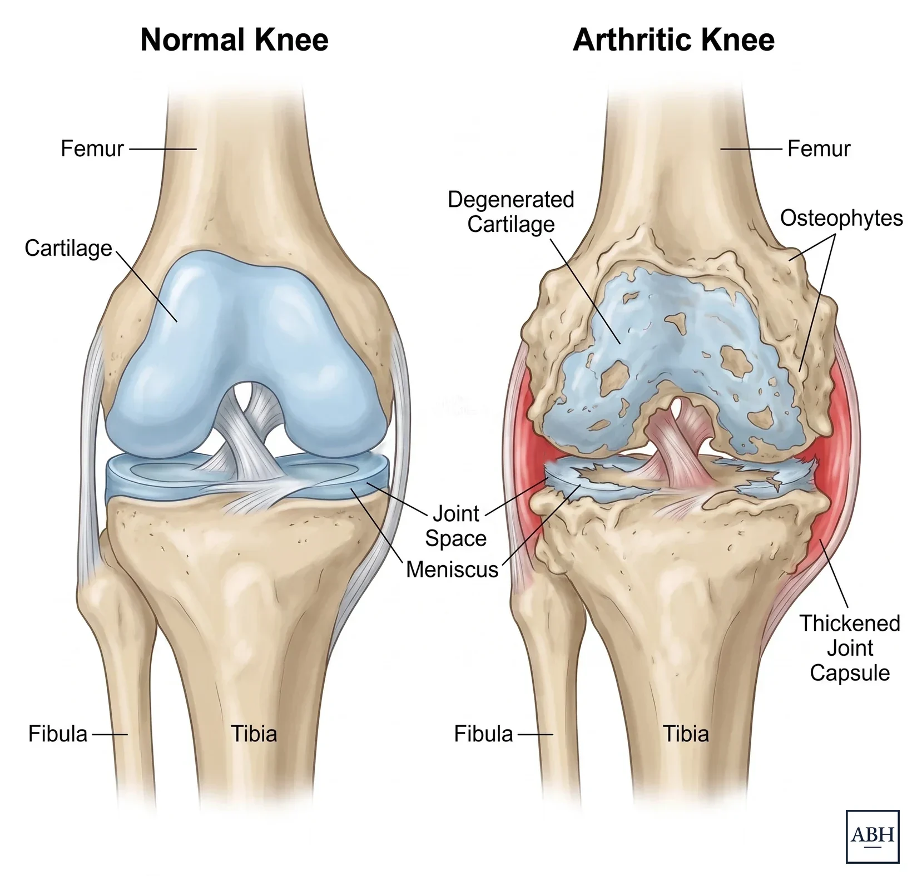

Knee arthritis usually becomes increasingly symptomatic over time (sometimes over years, but sometimes months). Stairs get more challenging to navigate, walking distances get shorter, and the knee may swell after activity or feel like it is giving out or catching. As the cartilage wears unevenly, some people notice the leg starting to look bowed or knock-kneed.1,2
A knee replacement is rarely something you strictly need. It is an elective operation, considered when damage to the joint limits daily life and non-surgical treatment no longer helps enough. The timing is your decision, and it is not set by a specific age or X-ray finding. Depending on where the wear is, the answer may be a total or partial knee replacement.
Osteoarthritis is the most common reason, but not the only one. A knee may also be replaced for inflammatory arthritis such as rheumatoid or psoriatic disease, for osteonecrosis, which is loss of blood supply to a portion of the bone, or for arthritis that develops years after an injury or fracture.
Cartilage rarely wears evenly. When the inner (medial) half of the knee wears faster, the leg gradually bows outward. When the outer (lateral) half wears faster, the knee drifts inward into a knock-kneed position. This develops slowly, and many patients do not notice it until someone else points it out or they see an older photograph. How much deformity is present, and whether the knee still corrects when it is examined, is part of what determines the options.
Giving way in an arthritic knee is very common. Sometimes this is due to torn ligaments, but can also be due to pain itself. Pain inhibits the quadriceps, the muscle that holds the knee straight under load, and the knee buckles for a moment. Uneven wear and the loss of a smooth joint surface add to this sensation which can be extremely bothersome and unnerving.
A knee that catches, clicks, or briefly locks can come from a degenerative meniscus tear, loose fragments of cartilage, or the roughened joint surface itself. In a knee that already has arthritis, these findings usually come along with the arthritis rather than being a separate problem. For example, a torn meniscus in a knee that also has severe arthritis is treated differently than a torn meniscus in a knee that is otherwise normal. Usually, the torn meniscus in an arthritic knee is not repaired or shaved away, but it is removed and the arthritic knee surfaces are replaced with a knee replacement.
An X-ray is one part of the collection of findings that help determine the best treatment. Some patients have severe arthritis that is visible on X-ray and are not having much pain. Others have moderate-looking changes and can barely manage a flight of stairs. This is where a hands-on physical examination and thorough discussion becomes extremely important.3,4
This matters even more in the knee than in the hip. A knee X-ray taken lying down can look considerably better than the same knee looks under body weight, because the joint space only collapses when the leg is loaded. Standing films, including a bent-knee view, show what is happening when you actually walk.
The cartilage space has worn down to where the two bones nearly touch. This typically (but not always) is a significant source of pain. On its own this finding does not necessarily mean you need surgery now, although most patients with “bone on bone” arthritis will be having symptoms severe enough to warrant surgery.

The same joint, healthy on the left and arthritic on the right.
Standing X-rays are typically enough. An MRI of an arthritic knee will often report a meniscus tear, because degenerative tears are extremely common in knees with arthritis, and that finding rarely changes the plan. MRI has a role when the diagnosis is unclear, when there is concern for avascular necrosis or a fracture not visible on X-ray, or when a ligament injury is suspected.
Most knee arthritis is managed without surgery for a long time.
Physical therapy strengthens the muscles around the knee, particularly the quadriceps, and can improve how the joint moves and how far you can walk comfortably. PT does not regrow cartilage or reverse arthritis. However, that is not a reason to skip PT entirely. Stronger knees tolerate arthritis better, and patients who go into surgery in better condition tend to have an easier recovery.
Weight reduction lowers the load across the joint and can reduce pain. Weight reduction may also lower the risk of complications if surgery happens later.
These take the edge off the pain, reduce inflammation, and help you stay active. Both of these treatments, however, have limits. Long-term daily anti-inflammatory use carries risks to the stomach, kidneys, and cardiovascular system.
Unlike the hip, the knee is a superficial joint, so injections can be given in the office without image guidance. That makes them a far more common part of knee arthritis care. A steroid (cortisone) injection reduces inflammation and can relieve pain, though the relief is temporary and tends to become shorter with each subsequent injection.
Gel injections (viscosupplementation) have less reliable results than steroid injections, but may possibly be used, especially in patients who are adamant about avoiding surgery. They are an option that can be discussed.
Timing matters if surgery is being considered. An injection given within three months of a knee replacement is associated with a higher risk of infection, so surgery is generally scheduled at least three months after the most recent injection.
Not every arthritic knee needs the whole joint replaced. The knee has three compartments: the inner (medial) side, the outer (lateral) side, and the joint behind the kneecap. When arthritis is confined to one of them, a partial knee replacement resurfaces only that part and leaves the rest of the knee, including the ligaments, intact.
The decision comes from your examination and your imaging, and is occasionally confirmed at the time of surgery. Dr. Harris also performs robotic-assisted knee replacement.
There is no point at which a knee replacement becomes mandatory. How long you wait is largely up to you, and there are often good reasons to wait.
Most patients deserve a real trial of prolonged nonoperative treatment before surgery is considered. This could involve any of the above treatments, or your own activity modification that has become less effective over time as your knee becomes more symptomatic.
Plenty of people have arthritic knees and live full, active lives. If you are still doing what you want to do, there is generally not a reason to undergo a knee replacement surgery.
Arthritis in the hip can refer pain down toward the knee, and problems in the lower back can do the same. If the hip, the spine, or another source is still a major contributor to your knee pain, replacing the knee may not completely improve your quality of life the same as it would for other patients.
Yes, though less than some patients are often led to believe.
A knee that has been stiff for years can lose motion and develop a contracture, meaning it no longer straightens fully. Regaining that last bit of extension after surgery is harder the longer it has been missing. In advanced cases, severe deformity or bone loss changes the anatomy and adds complexity to the operation.
The surgery remains possible either way, and the end result is generally the same. No one should have a knee replaced purely out of worry that it will be harder later. The right time is when the joint is limiting your life, non-surgical treatment is no longer enough, and you decide you are ready.
Modern knee replacements are also durable. Pooled registry data shows a high proportion still functioning well at twenty-five years, and many last longer than that.5
Knee arthritis is almost never an emergency; however, there are a few situations which may warrant urgent attention. Call rather than wait for the next available appointment if you have:
Dr. Harris starts with your history: where the pain is, what it stops you from doing, and what you have already tried and for how long. Then a hands-on examination of the knee, including how it tracks, how much motion it has, and whether any deformity corrects. Standing X-rays are reviewed, or obtained if you do not have recent ones.
Bringing prior imaging helps, ideally the images themselves (sometimes on a disc) rather than only the report. A list of treatments you have tried, with rough dates, saves time. So does a short list of the specific activities you want back.
If surgery is the right step, he will go through the options, including partial and total knee replacement, robotic assistance, what recovery looks like, and a realistic timeline. If it is not, he will say so and lay out what to do instead.
Knee replacement is elective, so the question is less whether you need it and more whether you want it. It is usually considered when joint pain limits daily life despite non-surgical treatment. Common signs include deep or aching knee pain with walking or stairs, swelling and stiffness, a knee that feels like it is giving out or locking, and pain that no longer responds to physical therapy, medication, or injections.
Osteoarthritis (wear-and-tear arthritis) is the most common reason, but far from the only one. Others include inflammatory arthritis such as rheumatoid or psoriatic disease, osteonecrosis (loss of blood supply to a portion of the bone), and arthritis that develops years after a knee injury or fracture.
Not always. When wear is limited to one compartment and the ligaments are intact, particularly the ACL, a partial knee replacement may be an option, preserving healthy cartilage and ligaments. When arthritis involves most of the joint, a total knee replacement is usually recommended. The decision comes down to your examination, your imaging, and other factors related to your knee anatomy.
Yes. Knee arthritis is usually managed first with activity modification, physical therapy, weight management, anti-inflammatory medication, and injections. Because surgery is elective, it comes into the conversation when those measures no longer give you enough relief to do what you want to do.
Giving way in an arthritic knee is very common. Sometimes it is due to a torn ligament, but it can also be due to the pain itself. Pain inhibits the quadriceps, the muscle that holds the knee straight under load, and the knee buckles for a moment. Uneven wear and the loss of a smooth joint surface add to the sensation.
Sometimes, but not always. “Bone on bone” means the cartilage space has worn down until the bones nearly touch on an X-ray. It can certainly explain why a knee hurts. Whether to operate rests on how much the joint limits your daily life, whether non-surgical treatment is still working, and whether you are ready.
Modern knee replacements have excellent outcomes. A high proportion are still functioning well at 25 years, and many last longer than that.5 While it is less common for younger patients to need a knee replacement, this is certainly a reasonable option if your knee pain is severely limiting your quality of life. The decision-making in younger patients becomes extremely nuanced and cannot be fully explained in a short paragraph, but Dr. Harris is willing to discuss the possibility of knee replacement in patients of all ages.
Gel injections (viscosupplementation) have less reliable results than steroid injections, but may possibly be used, especially in patients who are adamant about avoiding surgery. They are an option that can be discussed.
An injection given within three months of a knee replacement is associated with a higher risk of infection. Surgery is generally scheduled at least three months after the most recent injection.
Usually not. Standing X-rays are typically enough. An MRI of an arthritic knee will often report a meniscus tear, since degenerative tears are very common alongside arthritis, and that finding rarely changes the plan. MRI is reserved for an unclear diagnosis, concern for avascular necrosis or a fracture not visible on X-ray, or a suspected ligament injury.
A knee that has been stiff for many years can lose motion and develop a contracture, and advanced cases can involve deformity or bone loss that make the operation more complex. The surgery is still possible and the end result is generally the same, so worry that it will be harder later is not a good reason to operate sooner. The right time is when the joint limits your life, non-surgical care is no longer enough, and you are ready.
The knee replacement recovery guide covers what to expect week by week. When you want your knee evaluated in person, send a message.